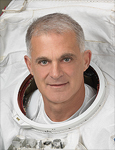

Lyndon B. Johnson Space Center
Houston, Texas 77058
|
National Aeronautics and Space Administration Lyndon B. Johnson Space Center Houston, Texas 77058 |
 |
Biographical Data |
||
David A. Wolf (BSEE, M.D.)
NASA Astronaut (FORMER)
PERSONAL DATA: Born August 23, 1956, in Indianapolis, Indiana. He enjoys sport aerobatic flying, scuba diving, handball, running and water skiing. His parents, Dr. and Mrs. Harry Wolf, reside in Indianapolis.
EDUCATION: Graduated from North Central High School, Indianapolis, Indiana, in 1974; received a Bachelor of Science degree in Electrical Engineering from Purdue University in 1978, and received a Doctor of Medicine degree from Indiana University in 1982. He completed his medical internship in 1983 at Methodist Hospital in Indianapolis, Indiana, and United States Air Force flight surgeon training at Brooks Air Force Base in San Antonio, Texas. Dr. Wolf has completed both U.S. astronaut and Russian cosmonaut training.
SPECIAL HONORS: Recipient of the NASA Exceptional Engineering Achievement Medal, 1990, and was NASA Inventor of the Year, 1992. Dr. Wolf graduated “with distinction” from the honors curriculum in Electrical Engineering at Purdue University and received an Academic Achievement Award upon graduation from Indiana University Medical School (combined research program). He is a Purdue “Distinguished Engineering Alumnus.” He received the Carl R. Ruddell scholarship award for research in medical ultrasonic digital signal and image processing. He is a member of Eta Kappa Knu and Phi Eta Sigma honorary societies. Dr. Wolf has received 15 U.S. patents, published more than 40 technical publications or papers, and received more than 20 Space Act Awards, primarily for 3-D tissue engineering technologies for which he received the Texas State Bar Patent of the Year in 1994. Dr. Wolf has received an additional honorary Doctorate from Indiana University and four Spaceflight Medals.
EXPERIENCE: As a research scientist at the Indianapolis Center for Advanced Research from 1980 to 1983, Dr. Wolf established himself as a pioneer in the development of modern medical ultrasonic image processing techniques. This technology applied pulse compression digital RF pulse echo signal processing to improve image resolution and enable target parameter extraction, techniques now used by most commercial systems. He also developed novel Doppler demodulation techniques, extending the range velocity product limitations inherent to conventional pulsed Doppler systems. He served as a USAF senior flight surgeon in the Air National Guard (1983 to 2004), achieving the rank of Lt. Colonel. He has logged more than 2,000 hours of flight time, including air combat training as a weapons systems officer (F4 Phantom jet), T-38 Talon and competition sport aerobatics (Christen Eagle).
NASA EXPERIENCE: Dr. Wolf served as chief of the Astronaut Office Extravehicular Activity (EVA) Branch for much of the International Space Station (ISS) assembly. He led a team responsible for the development, test and execution of spacewalks from the ISS and space shuttle. This team plays a critical role for ISS assembly, maintenance and repair; requiring innovations to extend EVA capability in the areas of hardware, techniques and human performance. Dr. Wolf has logged 168 days, 12 hours, 56 minutes and 04 seconds in space over four separate missions, including a long-duration mission (128 days) on the Russian MIR space station, which was trained and conducted completely in the Russian language. He has conducted a total of seven spacewalks, using both the American and Russian spacesuits, and has logged 47 hours and 05 minutes of extravehicular activity. He is an active public speaker and is called on to represent NASA in a wide variety of venues to communicate the experience and importance of human space flight.
In 1983, Dr. Wolf joined the Medical Sciences Division, Johnson Space Center, Houston, Texas. He was responsible for the development of the American Flight Echocardiograph, which is used in space for investigating cardiovascular physiology in microgravity. This work required synthesis of spacecraft avionics integration, human physiology and space operations to acquire fundamental cardiovascular data for human space exploration and reveal new Earth-based physiological principles. On completion, he was assigned as Chief Engineer for design of the Space Station Medical Facility, now operational on orbit. This work pioneered concepts in telemedicine, medical informatics and bioinstrumentation. In 1986, he became Chief Engineer (and, later, Program Manager) of the “Space Bioreactor,” a biotechnology-based tissue engineering and cancer research program. This team, under Dr. Wolf’s leadership, achieved the development of state of the art tissue engineering systems now widely used for both commercial and research purposes on Earth. Dr. Wolf fostered the successful technology transfer to private industry and to academic laboratory applications. Special skills developed include real-time computer process control, communications, power systems, bioprocessing, fluid dynamics, aerospace physiology and aerospace medicine. In these roles, Dr. Wolf was responsible for technical and multidisciplinary team leadership, a multimillion dollar budget, systems design, safety (electrical and biological) and spacecraft integration. This “on schedule” program is now a core biotechnology research facility on the ISS.
Selected as a NASA astronaut in January 1990, Dr. Wolf became qualified for space flight in July 1991. His technical assignments have included orbiter vehicle processing and testing at Kennedy Space Center (1991 to 1992) and spacecraft communications (CAPCOM, 1994 to 1995) on console for the first and third shuttle-MIR rendezvous and docking. He is a senior EVA (spacewalk) instructor and has qualified with the shuttle robotic manipulator system (robot arm). Dr. Wolf completed cosmonaut training at the Gagarin Cosmonaut Training Center, Star City, Russia. In December 2012, Dr. Wolf retired from NASA. He now works as a private consultant, serves as Extraordinary Scientist in Residence for the Indianapolis Children’s Museum (the largest of its kind), and is an active public and motivational speaker.
SPACE FLIGHT EXPERIENCE: STS-58 Columbia (October 16 to November 1, 1993) was a dedicated Spacelab life sciences research mission. The crew conducted neurovestibular, cardiovascular, cardiopulmonary, metabolic, and musculoskeletal research, using microgravity to reveal fundamental human physiology otherwise masked by Earth’s gravity. The mission duration was 14 days, 12 minutes and 32 seconds, a record at that time.
NASA-MIR 6 (Sept 25, 1997 to Jan 31, 1998). This sixth mission of the joint shuttle-MIR long-duration space flight program, immediately following “the” fire and collision, and recovering from multiple total power failures, played a core role to establish the international relationships serving the foundation of the current ISS Program. Dr. Wolf performed cosmonaut engineering and scientific duties on the Russian MIR space station, including 9 EVA hours in the Russian ORLAN spacesuit. The mission duration was 128 days. Wolf launched on STS-86 and returned on STS-89.
STS-112 Atlantis (October 7 to October 18, 2002) and STS-127 Endeavor (July 15 to July 31, 2009). These missions were on-orbit heavy ISS assembly missions by EVA and Robotics, including the S1 truss, Japanese Exposed Facility (JEF), P6 battery changeouts and multiple large external equipment installations. The missions provided critical ISS spacecraft communications, thermal control and power management systems. Wolf’s primary duties were as lead spacewalker (EV1) and rendezvous navigation specialist. He performed a total of 6 spacewalks: 19 hours and 41 minutes of EVA on STS-112; 18 hours and 24 minutes of EVA on STS-127. STS-112 mission duration was 10 days, 19 hours and 58 minutes; and STS-12 mission duration was 15 days, 16 hours, 44 minutes and 58 seconds.
JANUARY 2013
This is the only version available from NASA. Updates must be sought directly from the above named individual.